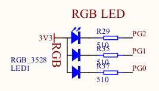
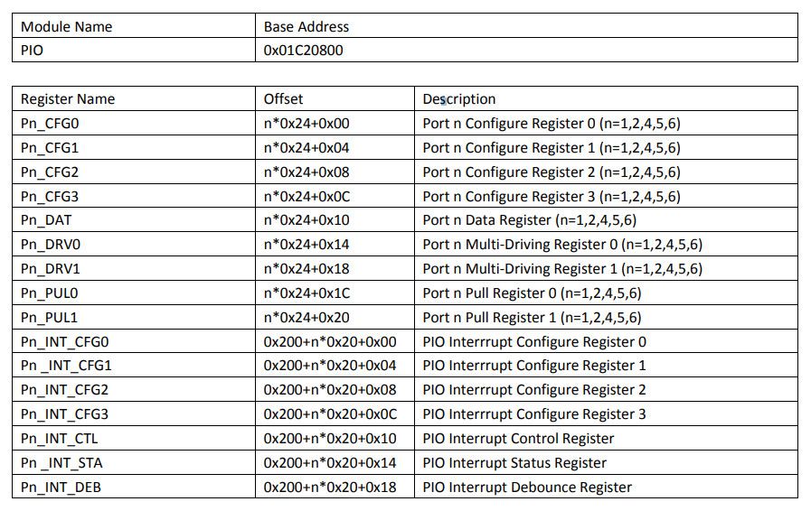
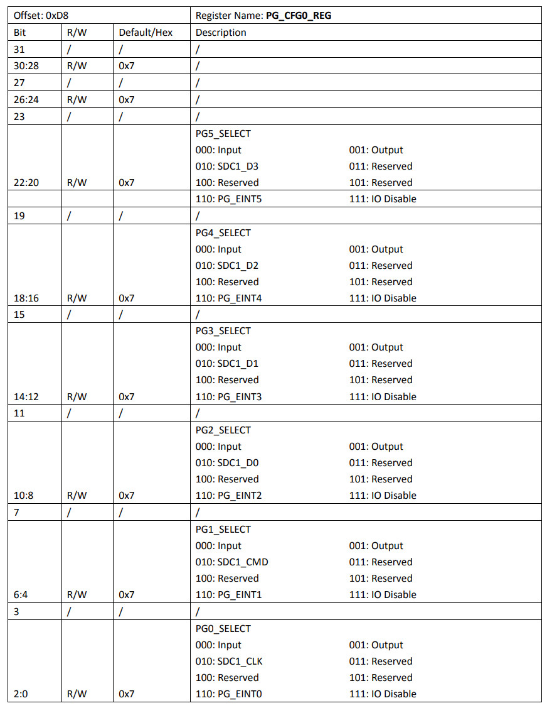
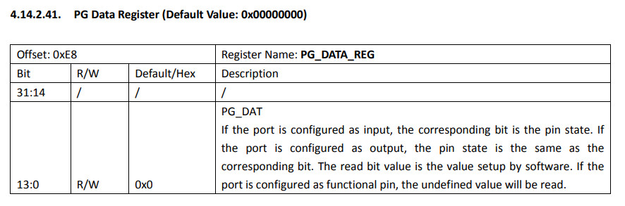
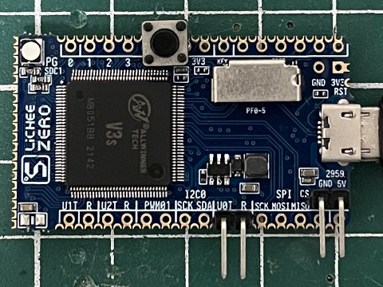
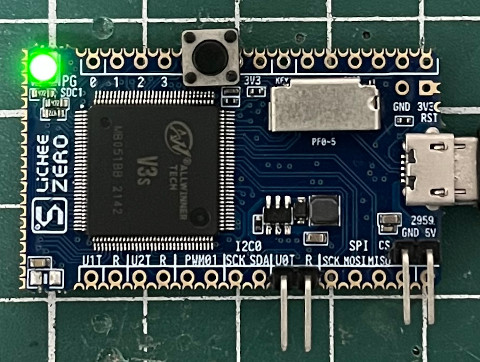

LED接到PG0~PG2




.global _start
.equ GPIO_BASE, 0x01c20800
.equ PG_CFG0, (GPIO_BASE + (0x24 * 6) + 0x00)
.equ PG_DATA, (GPIO_BASE + (0x24 * 6) + 0x10)
.arm
.text
_start:
.long 0xea000016
.byte 'e', 'G', 'O', 'N', '.', 'B', 'T', '0'
.long 0, __spl_size
.byte 'S', 'P', 'L', 2
.long 0, 0
.long 0, 0, 0, 0, 0, 0, 0, 0
.long 0, 0, 0, 0, 0, 0, 0, 0
_vector:
b reset
b .
b .
b .
b .
b .
b .
b .
reset:
ldr r0, =PG_CFG0
ldr r1, =0x00000001
str r1, [r0]
ldr r0, =PG_DATA
ldr r1, =(1 << 0)
0:
eor r2, r1
str r2, [r0]
ldr r3, =5000000
1:
subs r3, #1
bne 1b
b 0b
.end
main.ld
MEMORY {
RAM : ORIGIN = 0, LENGTH = 32K
}
SECTIONS {
text : {
PROVIDE(__spl_start = .);
*(.text*)
PROVIDE(__spl_end = .);
} > RAM
PROVIDE(__spl_size = __spl_end - __spl_start);
}
Makefile
all: arm-linux-gnueabihf-as -mcpu=cortex-a7 -o main.o main.s arm-linux-gnueabihf-ld -T main.ld -o main.elf main.o arm-linux-gnueabihf-objcopy -O binary main.elf main.bin gcc mksunxi.c -o mksunxi ./mksunxi main.bin run: sunxi-fel -p write 0 main.bin && sunxi-fel exec 0 clean: rm -rf main.bin main.o main.elf
編譯
$ make
arm-linux-gnueabihf-as -mcpu=cortex-a7 -o main.o main.s
arm-linux-gnueabihf-ld -T main.ld -o main.elf main.o
arm-linux-gnueabihf-objcopy -O binary main.elf main.bin
gcc mksunxi.c -o mksunxi
./mksunxi main.bin
The bootloader head has been fixed, spl size is 512 bytes.
下載
$ make run
sunxi-fel -p write 0 main.bin && sunxi-fel exec 0
100% [================================================] 1 kB, 139.3 kB/s
完成

